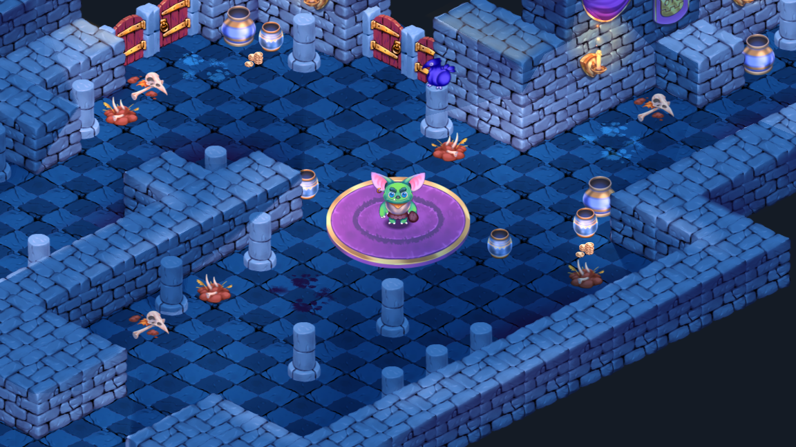
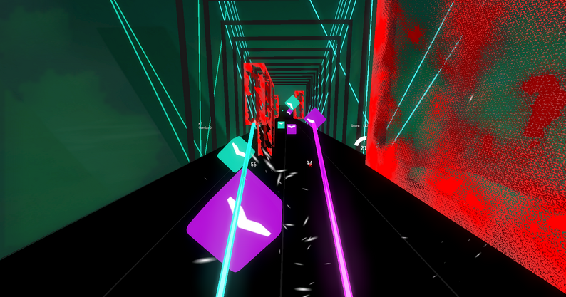
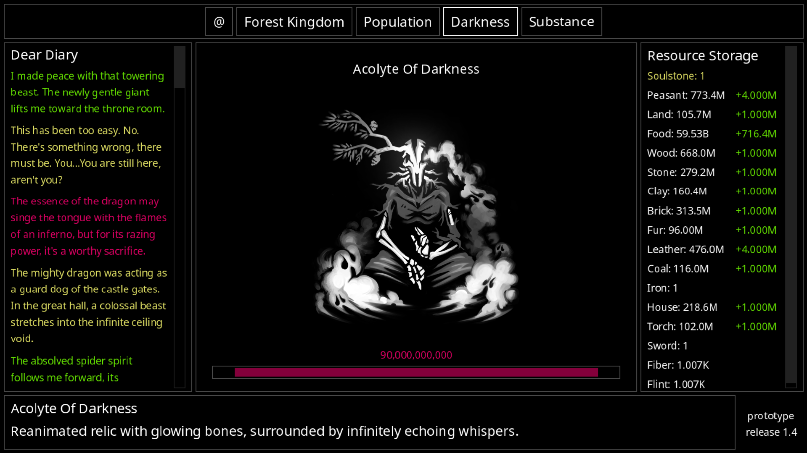

Godot Examples
Godot projects to poke around in
-

GitHub
Official Godot Example Projects
Godot's official open source example projects
-

Itch.io
Open Saber
An open source Beat Saber clone build in Godot 4
-

Itch.io
The Dark Forest
Minimalistic, open source idle game
Want to contribute? Head over to the GitHub Repository.